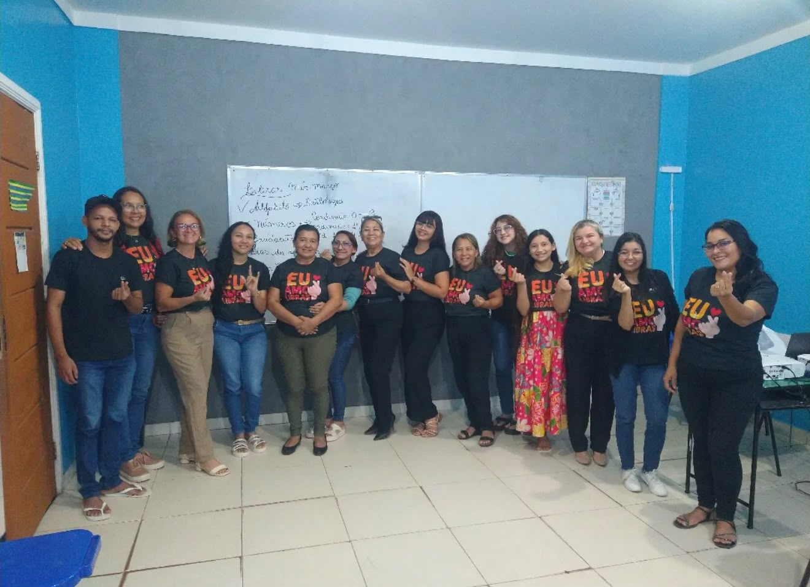
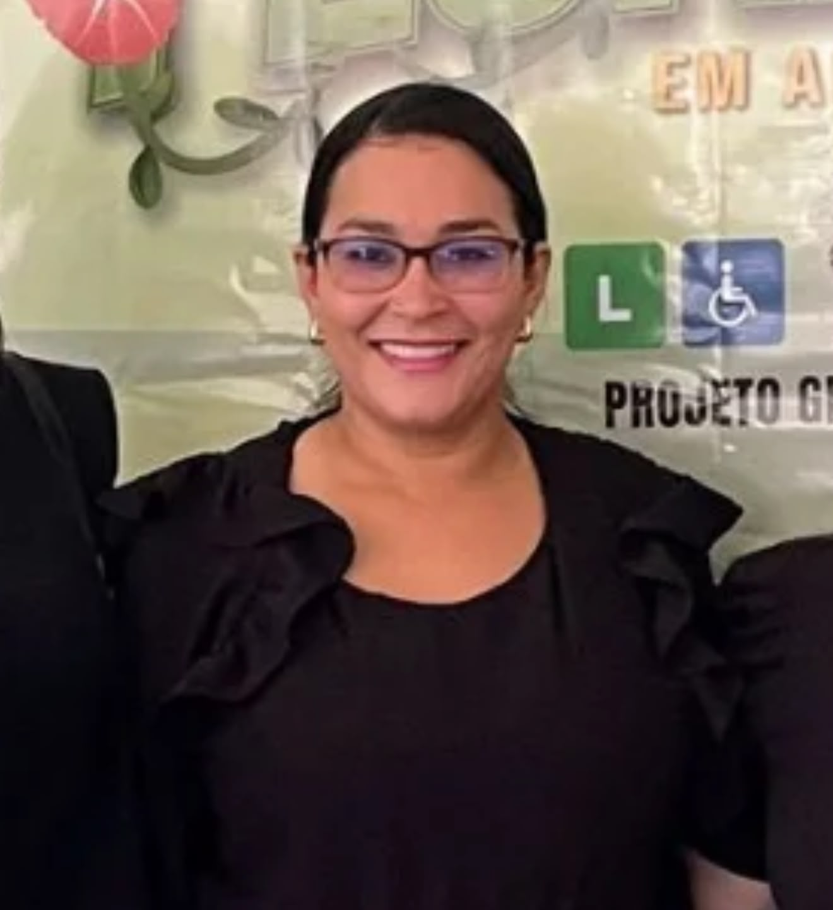
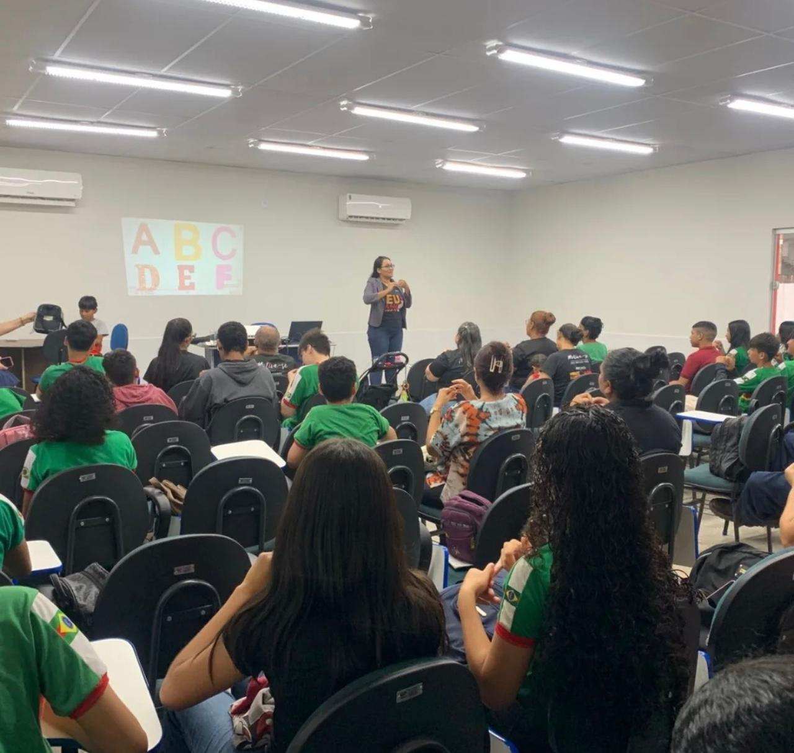

Cursos e formações
Libras, educação especial e capacitações pedagógicas de curto e médio prazo, com valores acessíveis.
BARCARENA · PARÁ · DESDE 2018
Formação em Libras, apoio pedagógico e consultoria inclusiva para aproximar pessoas, ampliar a comunicação e acolher cada jeito de aprender.

Uma trajetória feita de aprendizagem e encontros
UMA IDEIA QUE VIROU CAMINHO
Um projeto que nasceu da vontade de compartilhar conhecimento e abrir mais caminhos para a inclusão.

Foi em 8 de março de 2018, Dia Internacional da Mulher, que o projeto começou oficialmente como MEI em Barcarena, no Pará, na região metropolitana de Belém. A fundadora, professora Carla França, transformou sua experiência na educação em uma iniciativa dedicada à formação e à inclusão.
Desde então, a Motive-se oferece cursos acessíveis, assessoria pedagógica e ações que aproximam pessoas surdas, profissionais da educação, estudantes e comunidade. Cada turma e cada encontro são uma oportunidade de aprender, trocar experiências e construir novas formas de participar.
FUNDADORA
Uma trajetória dedicada à educação, à Libras e à formação inclusiva.
FORMAÇÃO, ORIENTAÇÃO E ACESSIBILIDADE
Aprender sobre inclusão é um passo importante para tornar a educação e os espaços do dia a dia mais acessíveis.
Libras, educação especial e capacitações pedagógicas de curto e médio prazo, com valores acessíveis.
Reforço escolar e adaptação de materiais para apoiar estudantes com deficiência em seu processo de aprendizagem.
Orientação pedagógica e apoio em assuntos específicos sobre inclusão para profissionais, instituições e comunidade.
Acessibilidade comunicacional para eventos, palestras, cursos, shows e projetos de cultura, arte e poesia.
A Libras é uma língua e um caminho de comunicação, participação e encontro.
ENCONTROS QUE APROXIMAM
Ao longo do ano, criamos oportunidades para aprender Libras, compartilhar vivências e fortalecer a presença da comunidade surda.
Um convite para aprender e compartilhar conhecimento com a comunidade.
Espaço de convivência, troca e aproximação entre pessoas.
Seminário anual: Encontro de Surdos e Intérpretes de Libras de/em Barcarena.

NOSSO PROPÓSITO
Queremos contribuir para que mais pessoas aprendam, se comuniquem e participem com autonomia — na escola, no trabalho e nos espaços da comunidade.
Promover educação mais acessível por meio da formação em Libras, da capacitação pedagógica e do apoio inclusivo, valorizando a aprendizagem e a participação das pessoas com deficiência.
Ampliar o conhecimento sobre Libras e inclusão, contribuindo para uma sociedade em que a comunicação acessível e o acolhimento estejam presentes em todos os espaços.
Nosso objetivo: oferecer formações e apoios de valores acessíveis e contribuir para que profissionais, estudantes e sociedade estejam mais preparados para conviver, comunicar e incluir.
INCLUSÃO É PARA TODO LUGAR
Uma palavra em Libras, uma atitude acessível ou mais conhecimento sobre outras deficiências podem fazer a diferença em uma escola, loja, supermercado, clínica, hospital, consulta ou feira.
São gestos de respeito que ajudam cada pessoa a se sentir bem recebida e parte do lugar.
Vamos conversar sobre inclusãoA GENTE PODE COMEÇAR COM UMA CONVERSA
Fale com a Motive-se para saber mais sobre cursos, assessoria, consultoria e acessibilidade em Libras.
Chamar no WhatsApp